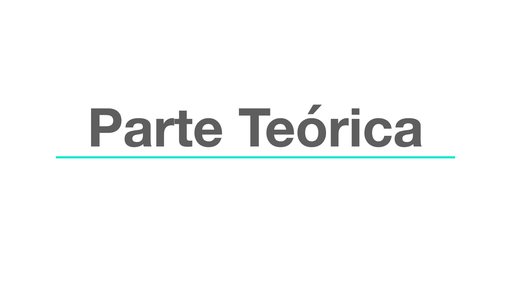
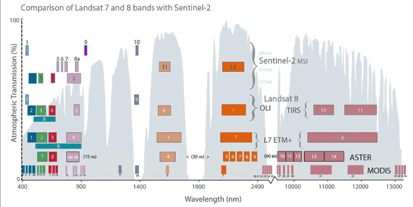

| Nro.Bits | Sensor | Potencias | Niveles |
|---|---|---|---|
| 12 Bits | MODIS | 2^12 | 4096 niveles |
| 10 Bits | AVHRR | 2^10 | 1024 niveles |
| 8 Bits | Landsat TM (Thematic Mapper) | 2^8 | 256 niveles |
| 6 Bits | Landsat MSS (Multispectral Scanner System) | 2^6 | 64 niveles |
4 S2: Satélites y Sensores
Tipos y Características


4.1 Satélites
4.1.1 Definición de Satélite
Un satélite es una plataforma que describe una trayectoria definida alrededor de la Tierra denominada órbita. Existen dos tipos de satélites: geoestacionarios y heliosíncronos.

4.1.2 Clasificación de Satélites por tipo de órbita
- Geoestacionarios:
-
Sobre la línea ecuatorial, a 36.000 km de la Tierra, realiza una vuelta alrededor de nuestro planeta al mismo tiempo que efectúa una rotación completa alrededor de su propio eje. Comunicaciones y meteorología.

- Heliosíncronos:
-
Orbitas circulares y polares relativo a la tierra a 160-2000 km. Captan imágenes con regularidad sobre un mismo punto o escena.

4.2 Sensores
4.2.1 Definción de Sensor
Un sensor es un instrumento a bordo de una plataforma capaz de adquirir remotamente información de diferentes regiones del espectro. Cada una de estas regiones se denomina canal o banda espectral. Existen dos tipos de sensores: activos y pasivos.
4.2.2 Clasificación de Sensores
- Sensores Activos:
-
Generan su propia radiación y la reciben reflejada (Radar y LiDAR)
- Sensores Pasivos:
-
Miden energía radiante reflejada o emitida por el sistema tierra- atmósfera. Ejemplo Landsat, Sentinel, MODIS.
4.2.3 Características de los Sesores
La energía emitida o reflejada por la superficie terrestre es un fenómeno continuo en 4 cuatro dimensiones: espacio, tiempo, longitud de onda y radiancia.
- Resolución espacial:
-
Tamaño del pixel o celda del raster que contiene a la banda espectral (Landsat: 30 m x 30 m)
- Resolución temporal:
-
Tiempo entre imágenes sucesivas (Landsat 16 días)
- Resolución espectral:
-
Número y rango de las regiones del espectro electromagnético para los que capta información el sensor .
- Resolución radiométrica:
-
Indica el número de intervalos de intensidad que puede captar el sensor (escala de grises) (Landsat 5 y 7: 256)
4.2.4 Resolución Espacial
Resolución espacial: Tamaño del pixel o celda del raster que contiene a la banda espectral (Landsat: 30 m x 30 m)
4.2.5 Resolución Temporal:
El tiempo que tarda un satélite en completar un ciclo orbital; también conocido como “tiempo de revisita”.

Depende de las capacidades, solapa de barrido y latitud del satélite/sensor. Algunos satélites pueden apuntar sus sensores y algunos además tienen una mayor solapa en latitudes superiores así que posiblemente tengan un mayor tiempo de repetición .
4.2.6 Resolución Espectral:
Número y rango de las regiones del espectro electromagnético para los que capta información el sensor.

Describe la habilidad del sensor de definir intérvalos de longitudes de onda. Cuanto más fina la resolución espectral, más estrecha la gama de longitudes de onda para un canal o banda en particular. Tener más y más finos canales permite la percepción remota de diferentes partes de la superficie de la Tierra.
4.2.7 Resolución Radiométrica:
Indica el número de intervalos de intensidad que puede captar el sensor. El número máximo de niveles de luminosidad disponible depende del número de bits que se utilizan en la representación de la energía registrada.

Cuanto mayor este número, más alta la resolución radiométrica y más nítidas las imágenes, representada por números digitales positivos que varían del 0 a (uno menos que) alguna potencia de 2.
4.3 Correcciones en Imágenes Satelitales
Las imágenes satelitales se encuentran expuestas a una serie de interferencias que pueden llegar a perturbar la información espacial, principalmente asociadas a una serie de errores mecánicos de los sensores o a interferencias atmosféricas.
- Corrección radiométrica: Corrige fallos en los sensores.
- Corrección geométrica: Alteraciones en los movimientos de los satélites generan distorsiones en la imagen.
- Corrección topográfica: El efecto topográfico provoca una variación de la respuesta radiométrica de la superficie inclinada frente a la de una horizontal (efecto sombra)
- Corrección atmosférica: Corrige las interferencias atmosféricas (vapor de agua)

Algunos productos satelitales son diponibilizados con una o varias correcciones y dependendiendo los tipos de correcciones se dividen en niveles.

4.4 Satélites más Utilizados
4.4.1 Landsat 8

Landsat 8 es un satélite de observación terrestre estadounidense lanzado el 11 de febrero de 2013. operado en la colaboración de la NASA con el USGS. El estudio de los datos se realiza mediante dos sensores principales. El satélite opera en luz visible, infrarrojo cercano, infrarrojo de onda corta e infrarrojo térmico (de onda larga). Las bandas de Landsat 8 están configuradas en 11 diferentes en base a la longitud de onda de su visión.

Uno de los sensores del Landsat 8, Operational Land Imager (OLI), usa 9 bandas en el espectro de la luz visible y el infrarrojo cercano. Otro de los sensores del Landsat 8, Thermal InfraRed Sensor (TIRS), opera en el rango de infrarrojos de onda larga (Longwave InfraRed Light). El satélite proporciona imágenes con una resolución moderada que varía en diferentes bandas desde 15 m por píxel en la más precisa hasta 100 m en el infrarrojo de onda larga, donde la precisión no es vital.
| Banda | Nombre | Longitud_de_onda_(μm) | Resolución(m) |
|---|---|---|---|
| 1 | Costera - Aerosoles | 0.435 - 0.451 | 30 |
| 2 | Azul | 0.452 - 0.512 | 30 |
| 3 | Verde | 0.533 - 0.590 | 30 |
| 4 | Rojo | 0.636 - 0.673 | 30 |
| 5 | Infrarrojo cercano (NIR) | 0.851 - 0.879 | 30 |
| 6 | Infrarrojo de onda corta 1 (SWIR 1) | 1.566 - 1.651 | 30 |
| 10 | (TIR 1) | 10.60 - 11.19 | 100 |
| 11 | (TIR 2) | 11.50 - 12.51 | 100 |
| 7 | Infrarrojo de onda corta 2 (SWIR 2) | 2.107 - 2.294 | 30 |
| 8 | Pancromática | 0.503 - 0.676 | 15 |
| 9 | Cirrus | 1.363 - 1.384 | 30 |
4.4.2 Sentinel 2
Sentinel-2 es una misión de observación terrestre desarrollada por la ESA dentro del programa Copérnico. Está compuesto por dos satélites idénticos: Sentinel-2A (junio de 2015) y Sentinel-2B (marzo de 2017)
Características:
- Imagen multiespectral datos con 13 bandas
- Sentinel-2 realiza las labores cada 5 días, pero con diferentes ángulos de visión.
- La resolución espacial de 10 m, 20 m y 60 m
- Política de datos libre y en abierto
| Banda | Nombre | Central.Wavelength | Resolución.m. |
|---|---|---|---|
| B1 | Ultra Blue (Coastal and Aerosol) | 443 nm | 60 m |
| B2 | Blue | 490 nm | 10 m |
| B3 | Green | 560 nm | 10 m |
| B4 | Red | 665 nm | 10 m |
| B5 | Visible and Near Infrared (VNIR) | 705 nm | 20 m |
| B6 | Visible and Near Infrared (VNIR) | 740 nm | 20 m |
| B7 | Visible and Near Infrared (VNIR) | 783 nm | 20 m |
| B8 | Visible and Near Infrared (VNIR) | 842 nm | 10 m |
| B8a | Visible and Near Infrared (VNIR) | 865 nm | 20 m |
| B9 | Short Wave Infrared (SWIR) | 940 nm | 60 m |
| B10 | Short Wave Infrared (SWIR) | 1375 nm | 60 m |
| B11 | Short Wave Infrared (SWIR) | 1610 nm | 20 m |
| B12 | Short Wave Infrared (SWIR) | 2190 nm | 20 m |
Mas referencias aquí
Finalmente se presenta una comparación la resolución espectral Landsat 8 y Sentinel-2:


Pendiente hasta la Nivelación en R Project….